Old Le Mans: cobbled lanes and half-timbered houses, the backdrop to many films.
Things to do in Le Mans
Heritage, motorsport, nature, good food: the essentials to see in and around Le Mans.
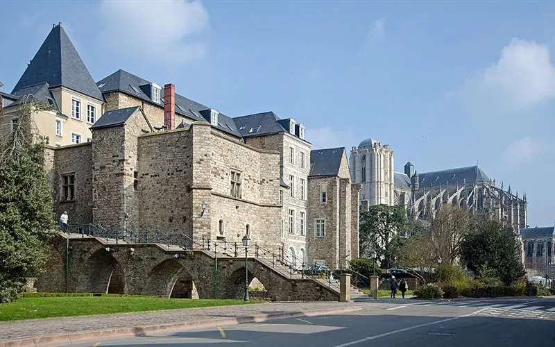
Heritage
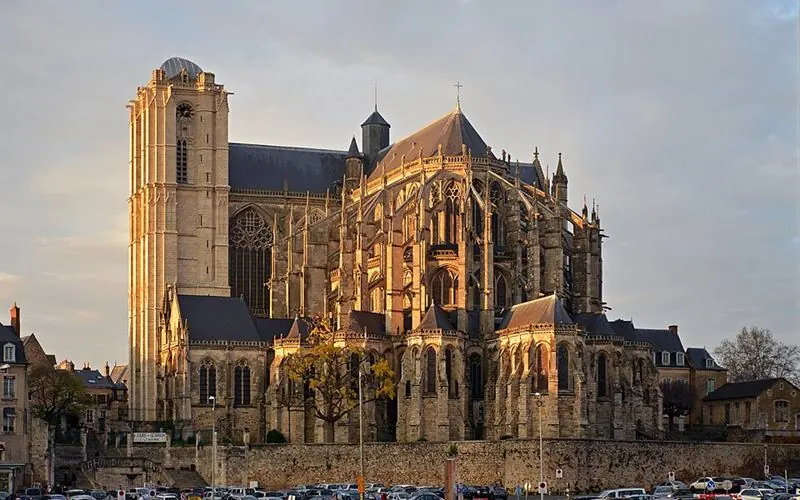
A Romanesque and Gothic cathedral, with a remarkable choir and stained glass.
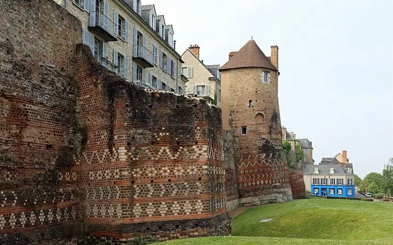
One of the best-preserved Roman walls in Europe, decorated with stone patterns.
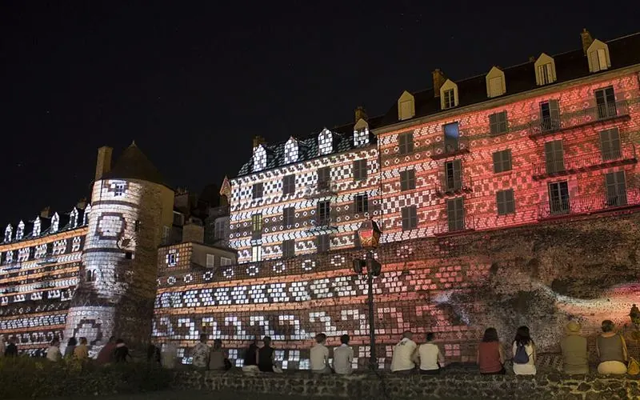
In summer, light projections bring the façades of the Cité Plantagenêt to life.
Motorsport
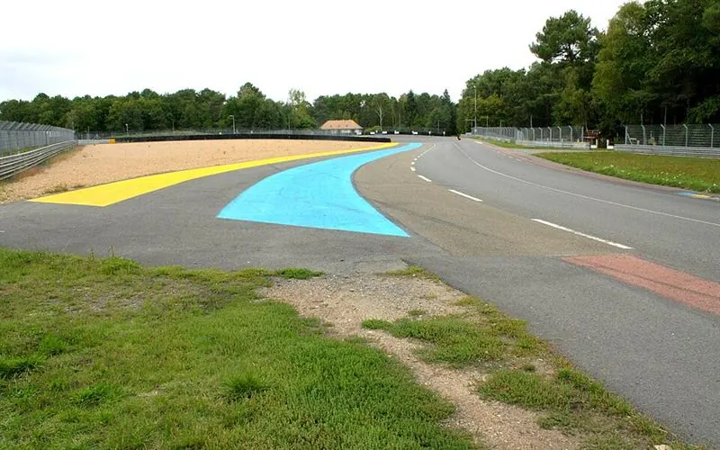
The Circuit de la Sarthe, part of which runs on roads that are open to traffic the rest of the year.
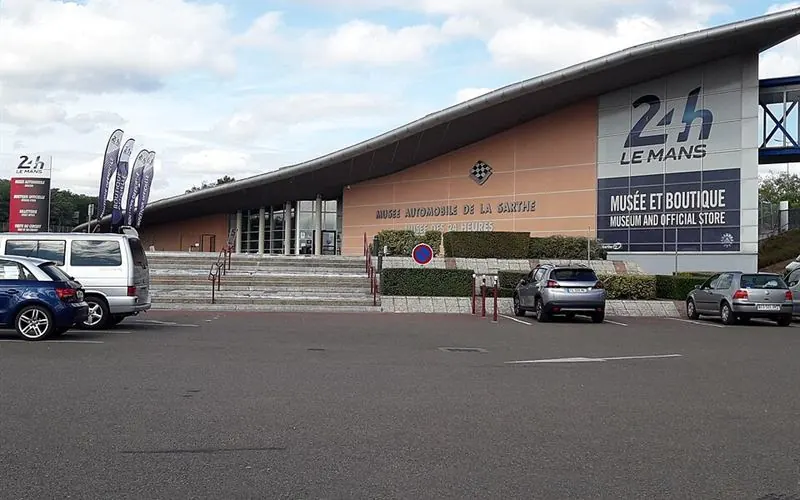
The history of the race and its cars, at the entrance to the circuit.
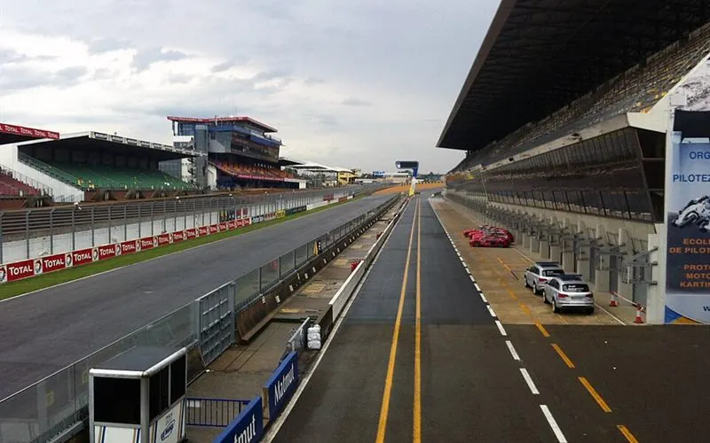
The permanent circuit, home in particular to motorcycle races.
Nature
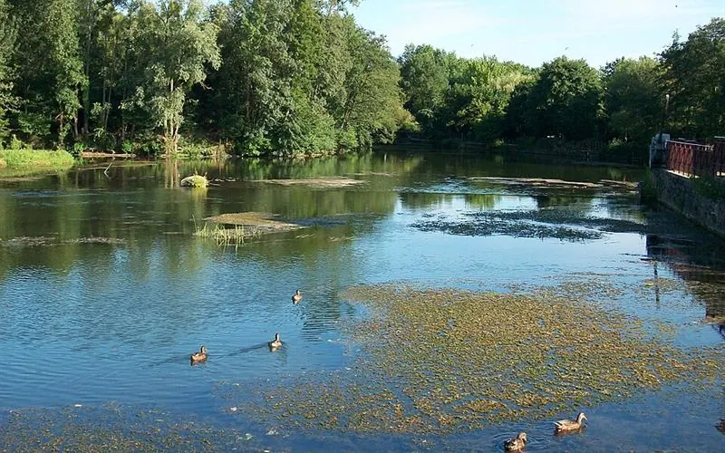
A vast natural area on the edge of Le Mans: woods, meadows and walking trails.
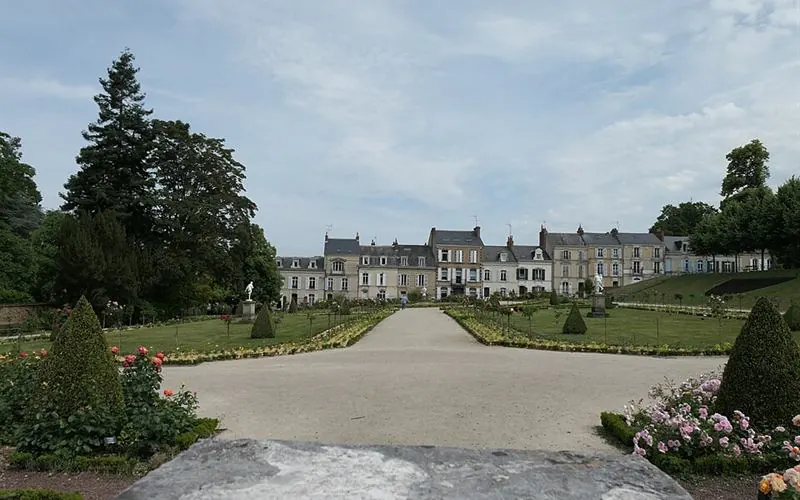
A 19th-century garden, half French formal, half English landscape, right in the centre.
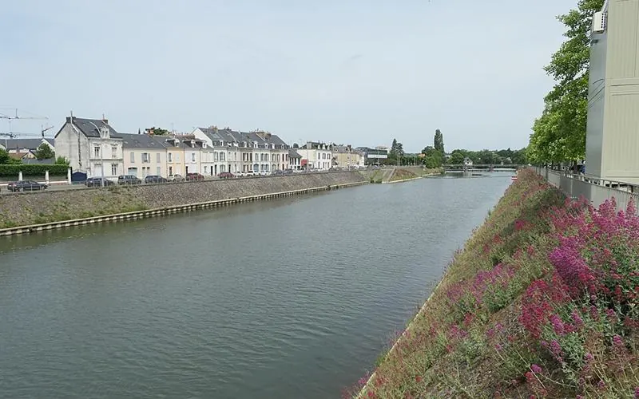
A riverside walk at the foot of the Cité Plantagenêt.
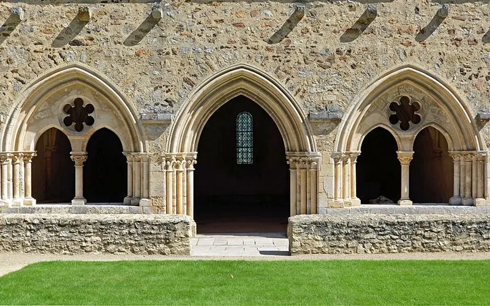
A 13th-century Cistercian abbey, founded by Queen Berengaria.
Food and outings
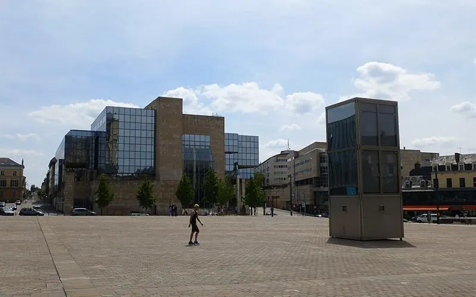
At the foot of the cathedral: a lively square, a cinema and performance venues.
Open-air markets in the city centre for local produce.
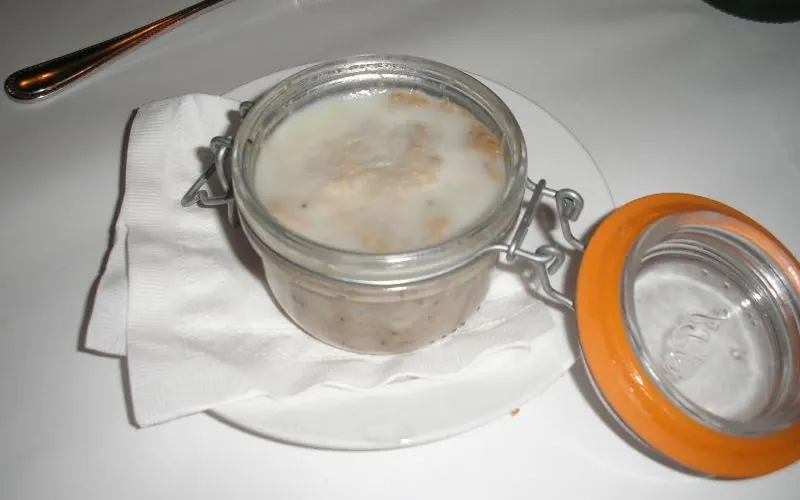
Rillettes du Mans, Loué chicken, and Sarthe apples and cider.
Major events
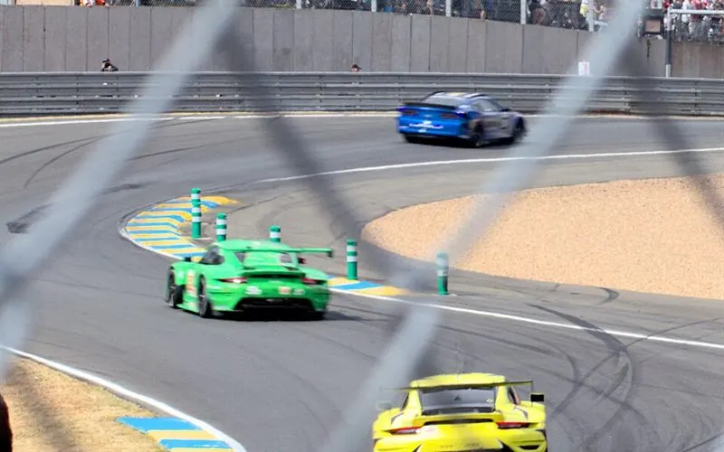
The famous endurance car race, every June.
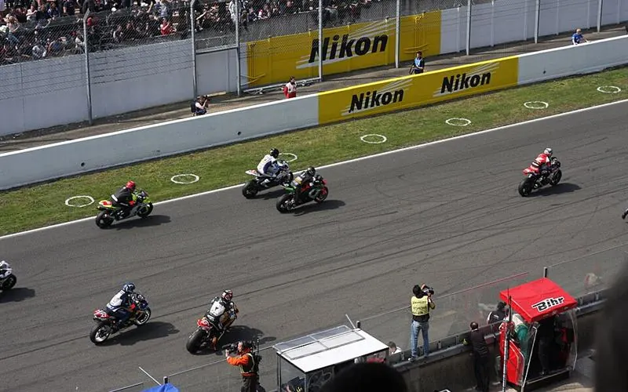
Motorcycle endurance racing in spring, on the Bugatti Circuit.
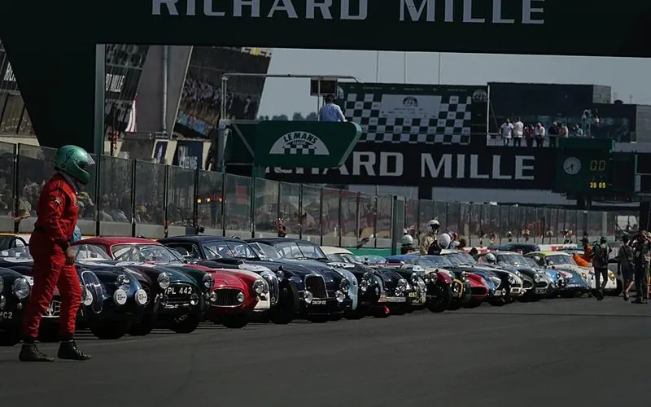
A gathering of vintage racing cars, held in some years.
A jazz festival that brings Le Mans and the surrounding area to life every year.
Le Mans Métropole Tourist Office: 16 rue de l'Étoile, 72000 Le Mans · +33 2 43 28 17 22 · officedetourismelemans@lemans-tourisme.fr · lemans-tourisme.com. Buses and trams: Setram. Train station (SNCF): 16 boulevard Robert Jarry.
Click an activity to see its address, contacts and directions. Opening hours, prices and dates change every year: check them on the official websites before you go.
Photo credits
Photos from Wikimedia Commons, under free licences. They have been cropped and resized.
- Cité Plantagenêt: “Le Mans - Cite Plantagenet 01.jpg”, Selbymay, CC BY-SA 3.0
- Saint-Julien Cathedral: “Le Mans - Cathedrale St Julien ext autumn.jpg”, Selbymay, CC BY-SA 3.0
- Gallo-Roman city wall: “Le Mans Enceinte R01.jpg”, Marc Ryckaert, CC BY-SA 4.0
- Nuit des Chimères: “La nuit des Chimères 2015 - enceinte romaine du Mans.jpg”, Mila Simakova, CC BY-SA 4.0
- 24 Hours circuit: “Virage du circuit des 24 heures.jpg”, Yvandathies, CC BY-SA 4.0
- 24 Hours of Le Mans Museum: “Musée automobile de la Sarthe 2014.jpg”, Aviator12, CC BY-SA 4.0
- Bugatti Circuit: “Stands du Circuit Bugatti.jpg”, Like tears in rain, CC BY-SA 3.0
- Arche de la Nature: “Huisne Arche de la Nature.JPG”, Le Mans (Wikimedia Commons), CC BY 3.0
- Jardin des Plantes: “Le Mans - jardin des Plantes 07.jpg”, Fab5669, CC BY 4.0
- Banks of the Sarthe: “Le Mans - Sarthe 01.jpg”, Fab5669, CC BY 4.0
- Épau Abbey: “Yvre - Abbaye Epau 01.jpg”, Selbymay, CC BY-SA 3.0
- Jacobins district: “Le Mans Place des Jacobins.jpg”, Martpan, CC BY-SA 4.0
- Rillettes and local specialities: “Rillettes du Mans.jpg”, Nikchick, CC BY-SA 2.0
- 24 Hours of Le Mans: “2023 24 Hours of Le Mans (53271755981).jpg”, mickael LE ROUZIC, CC BY 2.0
- 24 Hours Motos: “24 heures du mans moto 2010 (4538544109).jpg”, bibi95, CC BY 2.0
- Le Mans Classic: “DSC04002-Le Mans Classic 2018.jpg”, Y.Leclercq, CC BY-SA 4.0
Please check this information before your visit. Last updated 22 November 2026.
Owners: give this guide to your guests
A welcome book with the best local tips, given to your guests, improves their stay and your reviews. We'll prepare one for your home.